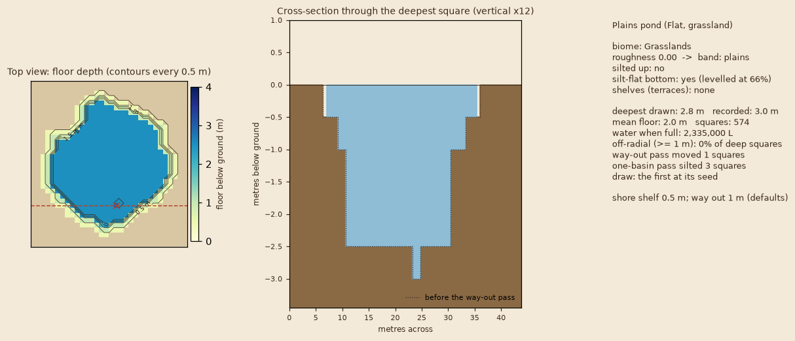
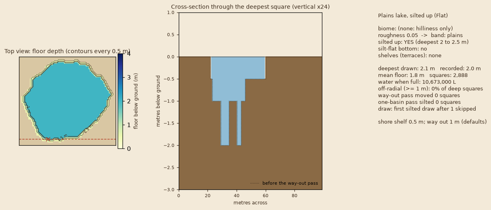
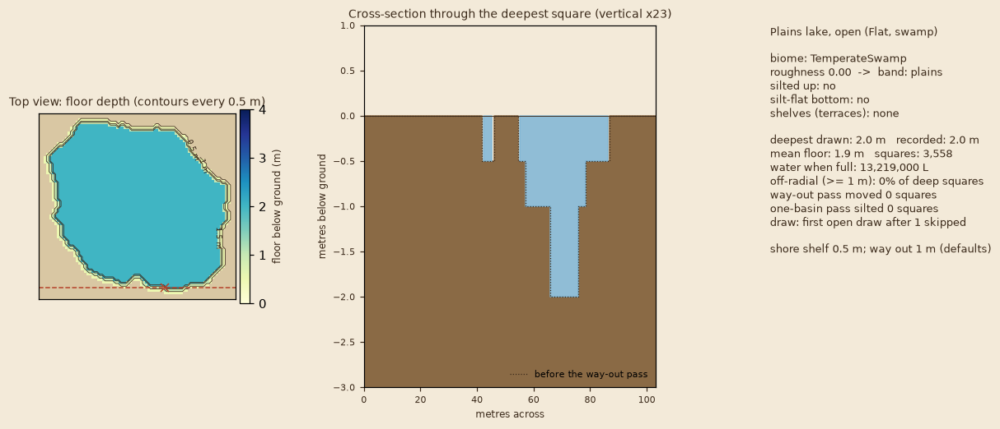
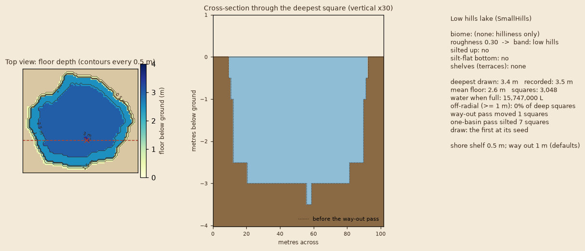
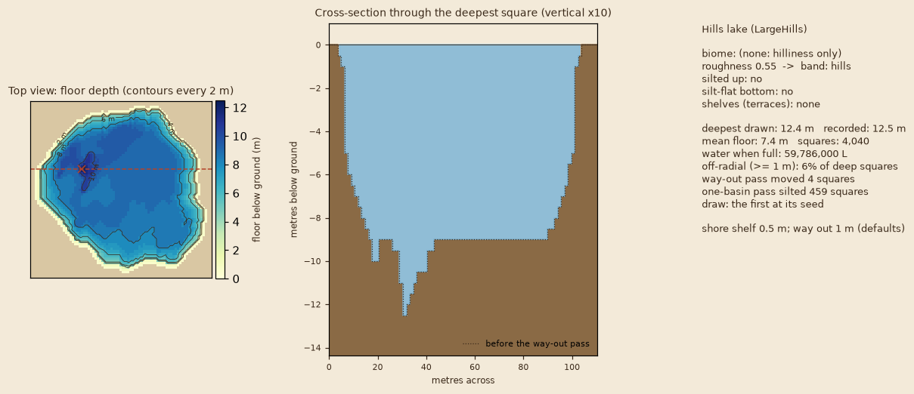
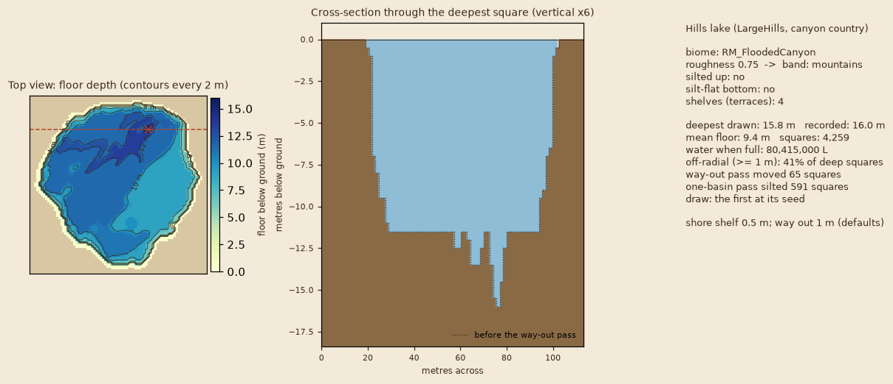
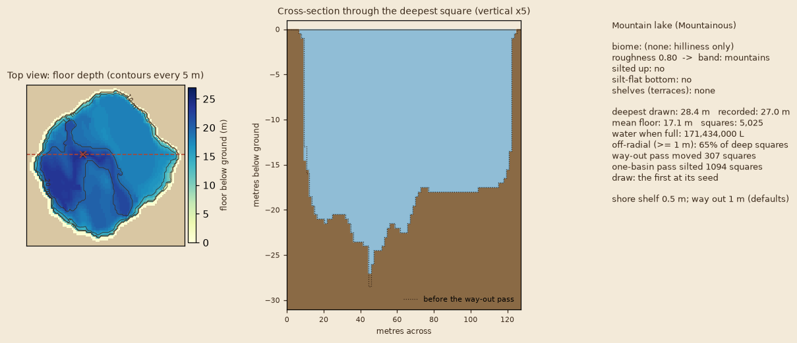
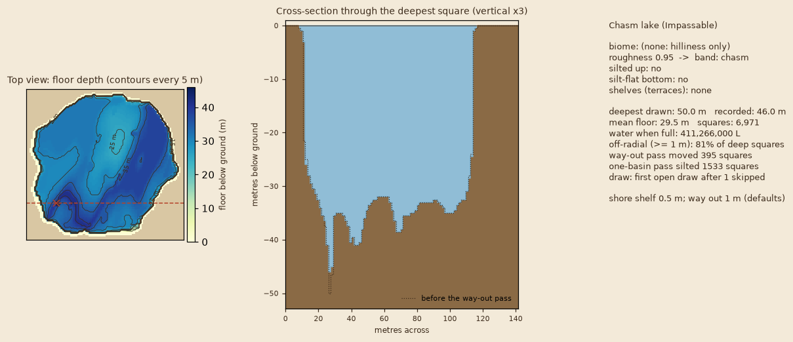

Your ruling (R11): "Vary it. Some lakes will be shallow and silted up. Others will be deep and chasm-like. Depends on the biome. The more mountainous, the deeper in general. The more plains-like, the smoother/shallower. They should also have some variation down there, not just a radial crater."
Eight lakes on made-up maps, floors drawn by the game's own floor code at the shipped defaults. A full lake looks exactly as it does today; this is what the floor would show if the lake were drained. Each lake is one random draw from its band. To show every kind once, each lake takes the first draw of the kind its caption names (silted or open; the skipped draws are counted on the picture); the table below gives the real odds. Another lake in the same place could be shallower or deeper.
Roughness is the map tile's hilliness plus a nudge from the biome (swamps, sumps and plains shallower; canyons, craters and mountains deeper). The deepest floor of a lake is drawn from the range, most lakes near the low end.
| band | roughness | deepest floor, per lake | never deeper | silted up | flat silt bottom | wall width (of the way to the middle) | shelves |
|---|---|---|---|---|---|---|---|
| plains | 0.05 | 2 to 5 m | 8 m | 45% | 55% | 85% | 10% |
| low hills | 0.30 | 3 to 10 m | 15 m | 30% | 40% | 60% | 25% |
| hills | 0.55 | 5 to 20 m | 30 m | 15% | 25% | 40% | 40% |
| mountains | 0.80 | 8 to 35 m | 50 m | 8% | 15% | 22% | 50% |
| chasm | 0.95 | 12 to 56 m | 50 m | 5% | 10% | 14% | 50% |
Two safety rules (defaults you can veto): the outer ring of every lake is a 0.5 m shore shelf, and every floor square has a walked way out with no step over 1 m, so a drained lake never traps a person. A hole with no way down to the deep water is silted up to its rim, so a drained lake never splits into pools.







